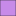

<!doctype html>
<html lang="en">
    <head>
        <meta charset="utf-8">
        <meta http-equiv="X-UA-Compatible" content="IE=edge">
        <meta name="viewport" content="initial-scale=1,user-scalable=no,maximum-scale=1,width=device-width">
        <meta name="mobile-web-app-capable" content="yes">
        <meta name="apple-mobile-web-app-capable" content="yes">
        <link rel="stylesheet" href="css/leaflet.css"><link rel="stylesheet" href="css/L.Control.Locate.min.css">
        <link rel="stylesheet" href="css/qgis2web.css"><link rel="stylesheet" href="css/fontawesome-all.min.css">
        <link rel="stylesheet" href="css/leaflet-search.css">
        <style>
        html, body, #map {
            width: 100%;
            height: 100%;
            padding: 0;
            margin: 0;
        }
        </style>
        <title>Toko Komputer Malang</title>
    </head>
    <body>
        <div id="map">
        </div>
        <script src="js/qgis2web_expressions.js"></script>
        <script src="js/leaflet.js"></script><script src="js/L.Control.Locate.min.js"></script>
        <script src="js/multi-style-layer.js"></script>
        <script src="js/leaflet-svg-shape-markers.min.js"></script>
        <script src="js/leaflet.rotatedMarker.js"></script>
        <script src="js/leaflet.pattern.js"></script>
        <script src="js/leaflet-hash.js"></script>
        <script src="js/Autolinker.min.js"></script>
        <script src="js/rbush.min.js"></script>
        <script src="js/labelgun.min.js"></script>
        <script src="js/labels.js"></script>
        <script src="js/leaflet-search.js"></script>
        <script src="data/Malang_2.js"></script>
        <script src="data/tokoKomputer_3.js"></script>
        <script>
        var highlightLayer;
        function highlightFeature(e) {
            highlightLayer = e.target;

            if (e.target.feature.geometry.type === 'LineString') {
              highlightLayer.setStyle({
                color: '#ffff00',
              });
            } else {
              highlightLayer.setStyle({
                fillColor: '#ffff00',
                fillOpacity: 1
              });
            }
        }
        var map = L.map('map', {
            zoomControl:true, maxZoom:28, minZoom:1
        }).fitBounds([[-8.095324049547758,112.45745427756988],[-7.8780914395477755,112.82099943959925]]);
        var hash = new L.Hash(map);
        map.attributionControl.setPrefix('<a href="https://github.com/tomchadwin/qgis2web" target="_blank">qgis2web</a> &middot; <a href="https://leafletjs.com" title="A JS library for interactive maps">Leaflet</a> &middot; <a href="https://qgis.org">QGIS</a>');
        var autolinker = new Autolinker({truncate: {length: 30, location: 'smart'}});
        L.control.locate({locateOptions: {maxZoom: 19}}).addTo(map);
        var bounds_group = new L.featureGroup([]);
        function setBounds() {
        }
        map.createPane('pane_googlestreet_0');
        map.getPane('pane_googlestreet_0').style.zIndex = 400;
        var layer_googlestreet_0 = L.tileLayer('https://mt1.google.com/vt/lyrs=m&x={x}&y={y}&z={z}', {
            pane: 'pane_googlestreet_0',
            opacity: 1.0,
            attribution: '',
            minZoom: 1,
            maxZoom: 28,
            minNativeZoom: 0,
            maxNativeZoom: 18
        });
        layer_googlestreet_0;
        map.addLayer(layer_googlestreet_0);
        map.createPane('pane_googlesatelit_1');
        map.getPane('pane_googlesatelit_1').style.zIndex = 401;
        var layer_googlesatelit_1 = L.tileLayer('https://mt1.google.com/vt/lyrs=s&x={x}&y={y}&z={z}', {
            pane: 'pane_googlesatelit_1',
            opacity: 1.0,
            attribution: '',
            minZoom: 1,
            maxZoom: 28,
            minNativeZoom: 0,
            maxNativeZoom: 18
        });
        layer_googlesatelit_1;
        map.addLayer(layer_googlesatelit_1);
        function pop_Malang_2(feature, layer) {
            layer.on({
                mouseout: function(e) {
                    for (i in e.target._eventParents) {
                        e.target._eventParents[i].resetStyle(e.target);
                    }
                },
                mouseover: highlightFeature,
            });
            var popupContent = '<table>\
                    <tr>\
                        <td colspan="2"><strong>kelurahan</strong><br />' + (feature.properties['kelurahan'] !== null ? autolinker.link(feature.properties['kelurahan'].toLocaleString()) : '') + '</td>\
                    </tr>\
                    <tr>\
                        <td colspan="2"><strong>Luas Wilay</strong><br />' + (feature.properties['Luas Wilay'] !== null ? autolinker.link(feature.properties['Luas Wilay'].toLocaleString()) : '') + '</td>\
                    </tr>\
                    <tr>\
                        <td colspan="2">' + (feature.properties['Nama Objek'] !== null ? autolinker.link(feature.properties['Nama Objek'].toLocaleString()) : '') + '</td>\
                    </tr>\
                    <tr>\
                        <td colspan="2"><strong>Kecamatan</strong><br />' + (feature.properties['Kecamatan'] !== null ? autolinker.link(feature.properties['Kecamatan'].toLocaleString()) : '') + '</td>\
                    </tr>\
                    <tr>\
                        <td colspan="2"><strong>Kota/Kab</strong><br />' + (feature.properties['Kota/Kab'] !== null ? autolinker.link(feature.properties['Kota/Kab'].toLocaleString()) : '') + '</td>\
                    </tr>\
                    <tr>\
                        <td colspan="2"><strong>Provinsi</strong><br />' + (feature.properties['Provinsi'] !== null ? autolinker.link(feature.properties['Provinsi'].toLocaleString()) : '') + '</td>\
                    </tr>\
                </table>';
            layer.bindPopup(popupContent, {maxHeight: 400});
        }

        function style_Malang_2_0(feature) {
            switch(String(feature.properties['Kecamatan'])) {
                case 'BLIMBING':
                    return {
                pane: 'pane_Malang_2',
                opacity: 1,
                color: 'rgba(35,35,35,1.0)',
                dashArray: '',
                lineCap: 'butt',
                lineJoin: 'miter',
                weight: 1.0, 
                fill: true,
                fillOpacity: 1,
                fillColor: 'rgba(218,103,136,1.0)',
                interactive: true,
            }
                    break;
                case 'KEDUNGKANDANG':
                    return {
                pane: 'pane_Malang_2',
                opacity: 1,
                color: 'rgba(35,35,35,1.0)',
                dashArray: '',
                lineCap: 'butt',
                lineJoin: 'miter',
                weight: 1.0, 
                fill: true,
                fillOpacity: 1,
                fillColor: 'rgba(211,99,155,1.0)',
                interactive: true,
            }
                    break;
                case 'KLOJEN':
                    return {
                pane: 'pane_Malang_2',
                opacity: 1,
                color: 'rgba(35,35,35,1.0)',
                dashArray: '',
                lineCap: 'butt',
                lineJoin: 'miter',
                weight: 1.0, 
                fill: true,
                fillOpacity: 1,
                fillColor: 'rgba(161,55,218,1.0)',
                interactive: true,
            }
                    break;
                case 'LOWOKWARU':
                    return {
                pane: 'pane_Malang_2',
                opacity: 1,
                color: 'rgba(35,35,35,1.0)',
                dashArray: '',
                lineCap: 'butt',
                lineJoin: 'miter',
                weight: 1.0, 
                fill: true,
                fillOpacity: 1,
                fillColor: 'rgba(54,165,224,1.0)',
                interactive: true,
            }
                    break;
                case 'SUKUN':
                    return {
                pane: 'pane_Malang_2',
                opacity: 1,
                color: 'rgba(35,35,35,1.0)',
                dashArray: '',
                lineCap: 'butt',
                lineJoin: 'miter',
                weight: 1.0, 
                fill: true,
                fillOpacity: 1,
                fillColor: 'rgba(71,233,42,1.0)',
                interactive: true,
            }
                    break;
            }
        }
        map.createPane('pane_Malang_2');
        map.getPane('pane_Malang_2').style.zIndex = 402;
        map.getPane('pane_Malang_2').style['mix-blend-mode'] = 'normal';
        var layer_Malang_2 = new L.geoJson(json_Malang_2, {
            attribution: '',
            interactive: true,
            dataVar: 'json_Malang_2',
            layerName: 'layer_Malang_2',
            pane: 'pane_Malang_2',
            onEachFeature: pop_Malang_2,
            style: style_Malang_2_0,
        });
        bounds_group.addLayer(layer_Malang_2);
        map.addLayer(layer_Malang_2);
        function pop_tokoKomputer_3(feature, layer) {
            layer.on({
                mouseout: function(e) {
                    for (i in e.target._eventParents) {
                        e.target._eventParents[i].resetStyle(e.target);
                    }
                },
                mouseover: highlightFeature,
            });
            var popupContent = '<table>\
                    <tr>\
                        <th scope="row">ID</th>\
                        <td>' + (feature.properties['ID'] !== null ? autolinker.link(feature.properties['ID'].toLocaleString()) : '') + '</td>\
                    </tr>\
                    <tr>\
                        <th scope="row">Nama Toko</th>\
                        <td>' + (feature.properties['Nama Toko'] !== null ? autolinker.link(feature.properties['Nama Toko'].toLocaleString()) : '') + '</td>\
                    </tr>\
                    <tr>\
                        <th scope="row">Luas</th>\
                        <td>' + (feature.properties['Luas'] !== null ? autolinker.link(feature.properties['Luas'].toLocaleString()) : '') + '</td>\
                    </tr>\
                    <tr>\
                        <th scope="row">Kecamatan</th>\
                        <td>' + (feature.properties['Kecamatan'] !== null ? autolinker.link(feature.properties['Kecamatan'].toLocaleString()) : '') + '</td>\
                    </tr>\
                    <tr>\
                        <th scope="row">Alamat</th>\
                        <td>' + (feature.properties['Alamat'] !== null ? autolinker.link(feature.properties['Alamat'].toLocaleString()) : '') + '</td>\
                    </tr>\
                    <tr>\
                        <th scope="row">Keterangan</th>\
                        <td>' + (feature.properties['Keterangan'] !== null ? autolinker.link(feature.properties['Keterangan'].toLocaleString()) : '') + '</td>\
                    </tr>\
                    <tr>\
                        <td colspan="2">' + (feature.properties['Y'] !== null ? autolinker.link(feature.properties['Y'].toLocaleString()) : '') + '</td>\
                    </tr>\
                    <tr>\
                        <td colspan="2">' + (feature.properties['X'] !== null ? autolinker.link(feature.properties['X'].toLocaleString()) : '') + '</td>\
                    </tr>\
                </table>';
            layer.bindPopup(popupContent, {maxHeight: 400});
        }

        function style_tokoKomputer_3_0() {
            return {
                pane: 'pane_tokoKomputer_3',
                radius: 13.2,
                opacity: 1,
                color: 'rgba(184,8,8,1.0)',
                dashArray: '',
                lineCap: 'butt',
                lineJoin: 'miter',
                weight: 1.0,
                fill: true,
                fillOpacity: 1,
                fillColor: 'rgba(184,8,8,1.0)',
                interactive: true,
            }
        }
        function style_tokoKomputer_3_1() {
            return {
                pane: 'pane_tokoKomputer_3',
                radius: 14.4,
                opacity: 1,
                color: 'rgba(255,0,0,1.0)',
                dashArray: '',
                lineCap: 'butt',
                lineJoin: 'miter',
                weight: 1.0,
                fill: true,
                fillOpacity: 1,
                fillColor: 'rgba(255,0,0,1.0)',
                interactive: true,
            }
        }
        map.createPane('pane_tokoKomputer_3');
        map.getPane('pane_tokoKomputer_3').style.zIndex = 403;
        map.getPane('pane_tokoKomputer_3').style['mix-blend-mode'] = 'normal';
        var layer_tokoKomputer_3 = new L.geoJson.multiStyle(json_tokoKomputer_3, {
            attribution: '',
            interactive: true,
            dataVar: 'json_tokoKomputer_3',
            layerName: 'layer_tokoKomputer_3',
            pane: 'pane_tokoKomputer_3',
            onEachFeature: pop_tokoKomputer_3,
            pointToLayers: [function (feature, latlng) {
                var context = {
                    feature: feature,
                    variables: {}
                };
                return L.shapeMarker(latlng, style_tokoKomputer_3_0(feature));
            },function (feature, latlng) {
                var context = {
                    feature: feature,
                    variables: {}
                };
                return L.shapeMarker(latlng, style_tokoKomputer_3_1(feature));
            },
        ]});
        bounds_group.addLayer(layer_tokoKomputer_3);
        map.addLayer(layer_tokoKomputer_3);
            var title = new L.Control();
            title.onAdd = function (map) {
                this._div = L.DomUtil.create('div', 'info');
                this.update();
                return this._div;
            };
            title.update = function () {
                this._div.innerHTML = '<h2>Toko Komputer Malang</h2>';
            };
            title.addTo(map);
            var abstract = new L.Control({'position':'bottomleft'});
            abstract.onAdd = function (map) {
                this._div = L.DomUtil.create('div',
                'leaflet-control abstract');
                this._div.id = 'abstract'

                    abstract.show();
                    return this._div;
                };
                abstract.show = function () {
                    this._div.classList.remove("abstract");
                    this._div.classList.add("abstractUncollapsed");
                    this._div.innerHTML = 'Peta Ini menyajikan informasi toko komputer di Malang.';
            };
            abstract.addTo(map);
        var baseMaps = {};
        L.control.layers(baseMaps,{' toko Komputer': layer_tokoKomputer_3,'Malang<br /><table><tr><td style="text-align: center;"></td><td>BLIMBING</td></tr><tr><td style="text-align: center;"></td><td>KEDUNGKANDANG</td></tr><tr><td style="text-align: center;"></td><td>KLOJEN</td></tr><tr><td style="text-align: center;"></td><td>LOWOKWARU</td></tr><tr><td style="text-align: center;"></td><td>SUKUN</td></tr></table>': layer_Malang_2,"google satelit": layer_googlesatelit_1,"google street": layer_googlestreet_0,},{collapsed:false}).addTo(map);
        setBounds();
        map.addControl(new L.Control.Search({
            layer: layer_Malang_2,
            initial: false,
            hideMarkerOnCollapse: true,
            propertyName: 'Kecamatan'}));
        document.getElementsByClassName('search-button')[0].className +=
         ' fa fa-binoculars';
        </script>
    </body>
</html>
